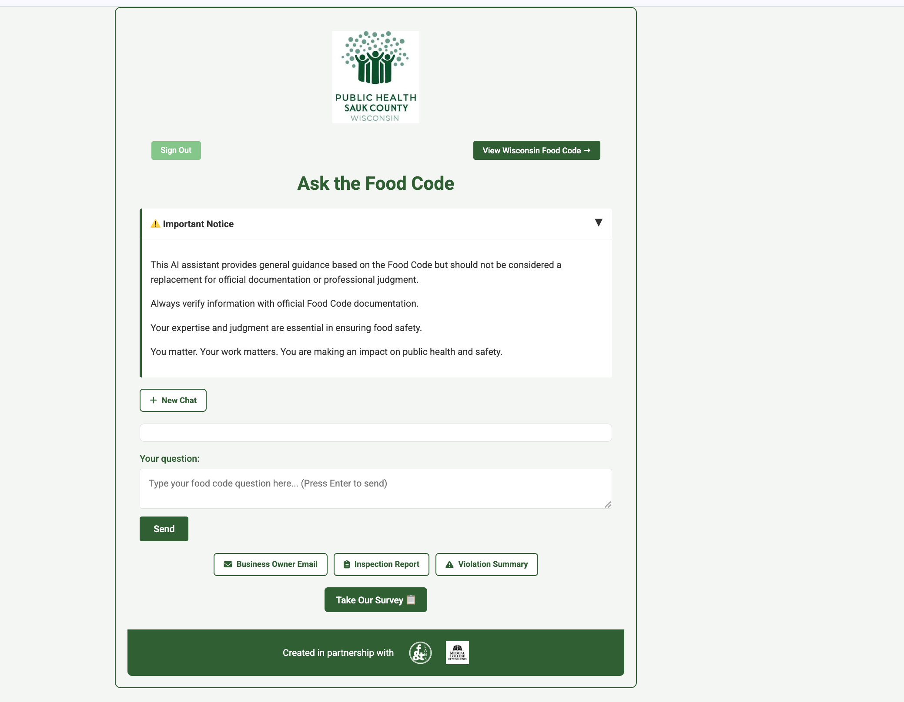
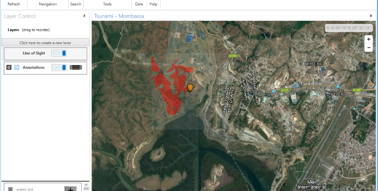
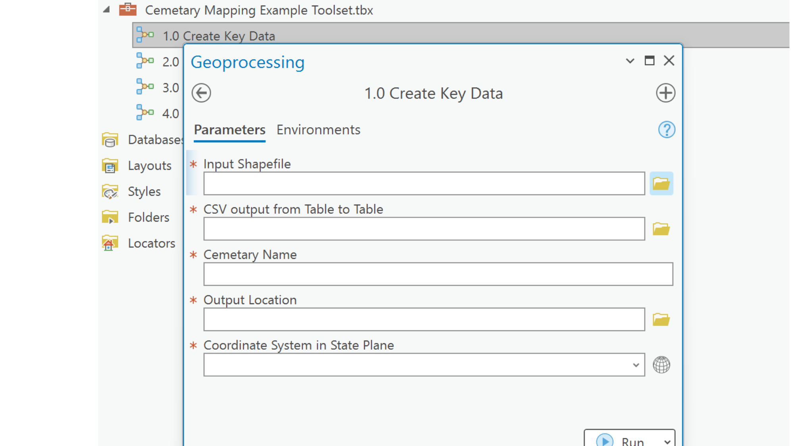
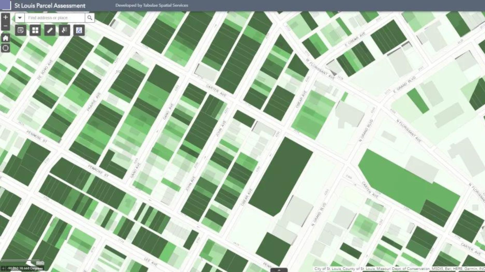
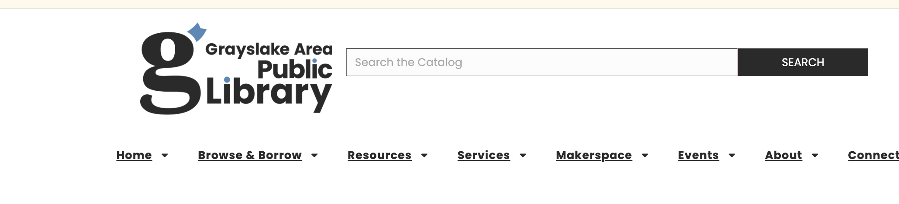

30m → 5m
Routine task time, Sauk County Health Dept
F&T Labs · Public Health Sauk County · 2023–2024
50 interviews to find the real problem: not missing tools, missing policy. Then we built the fix — and it became a product.
Read case study →

Global
First military site location tool — 3 deployment theaters
Army Corps of Engineers · Defense · 2013–2019
The military didn’t need a better database. It needed data standards that worked globally
Read case study →
8h → 30m
Dashboard reporting time
Peapod Digital Labs · Supply Chain · 2020–2023
The dashboard wasn’t the problem. Nobody trusted the model behind it
Read case study →

Days → hrs
Parcel identification after wildfire
Post-Disaster · Reforestation · DroneSeed
After a wildfire, every day matters. We built a tool to find the right parcels in hours, not weeks
Read case study →

6 months
On the ground after Hurricane Maria
Disaster Response · Puerto Rico · 2017–2018
After Hurricane Maria, the hardest problem was knowing what you didn’t know
Read case study →

Days → min
Record lookup time
Civic Tech · Historical GIS · 2019
County records were fine. Nobody could find them. A spatial index solved it
Read case study →

Every parcel
St. Louis — permeability scored city-wide
Urban Planning · Environmental · St. Louis
The engineers had the data. The planners had the priorities. Nobody had connected them
Read case study →

127
Requirements. 6 months. Go-live day one.
F&T Labs · Gov Custom Dev · Salesforce · 2024–2025
Three years to get the budget. Six months to build it. One day to win the team over.
Read case study →
180+
Community voices, 6 weeks, bilingual
Community Research · North Chicago · 2023
You don’t find out what a community needs by sitting at your desk
Read case study →

2,400+
Books automated, 0 manual holds
Personal · Automation · Ongoing
A small problem. Automated.
Read case study →